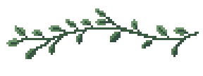
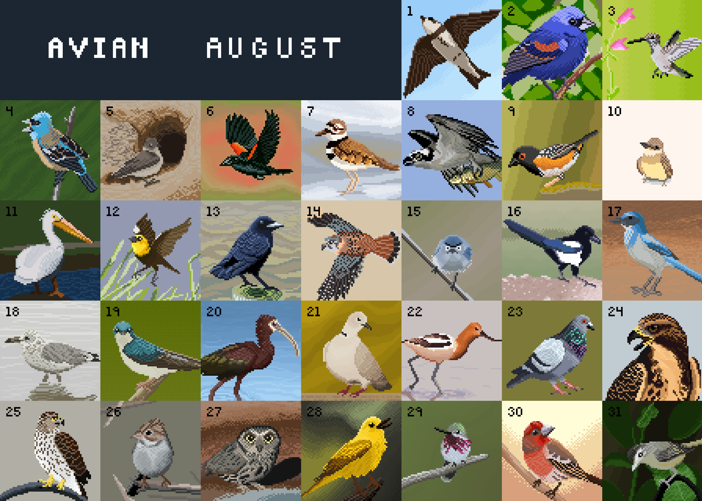

I love birds! This was a fun challenge for myself: every day in the month of August, I drew a new bird.
I didn't limit the number of colors I used for each bird, but the size of each image is 64x64 pixels.
Each bird of the day was my "featured bird of the day" from my birdwatching app, Merlin (from Cornell University)
I love how I can see how much I improved over the course of a month of drawing.